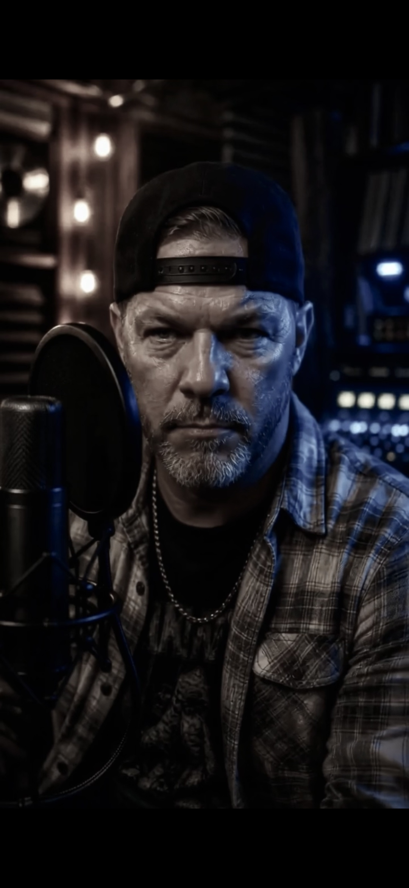
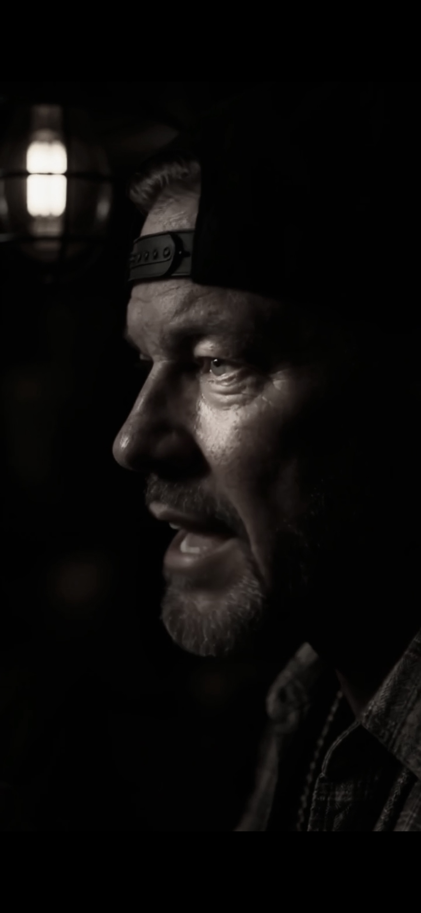
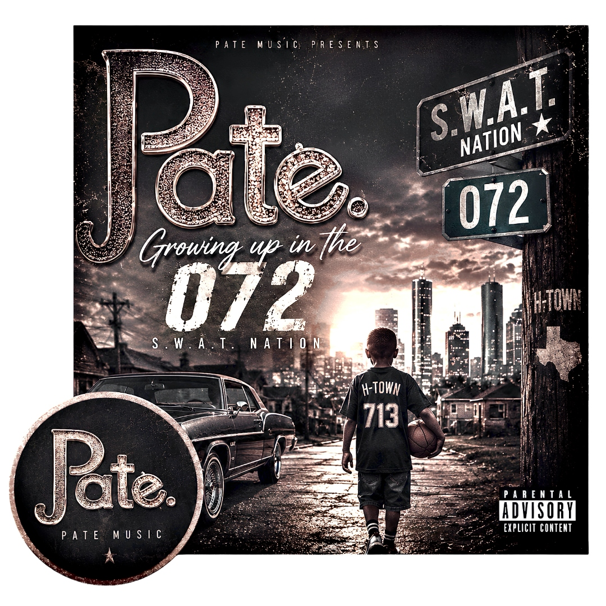
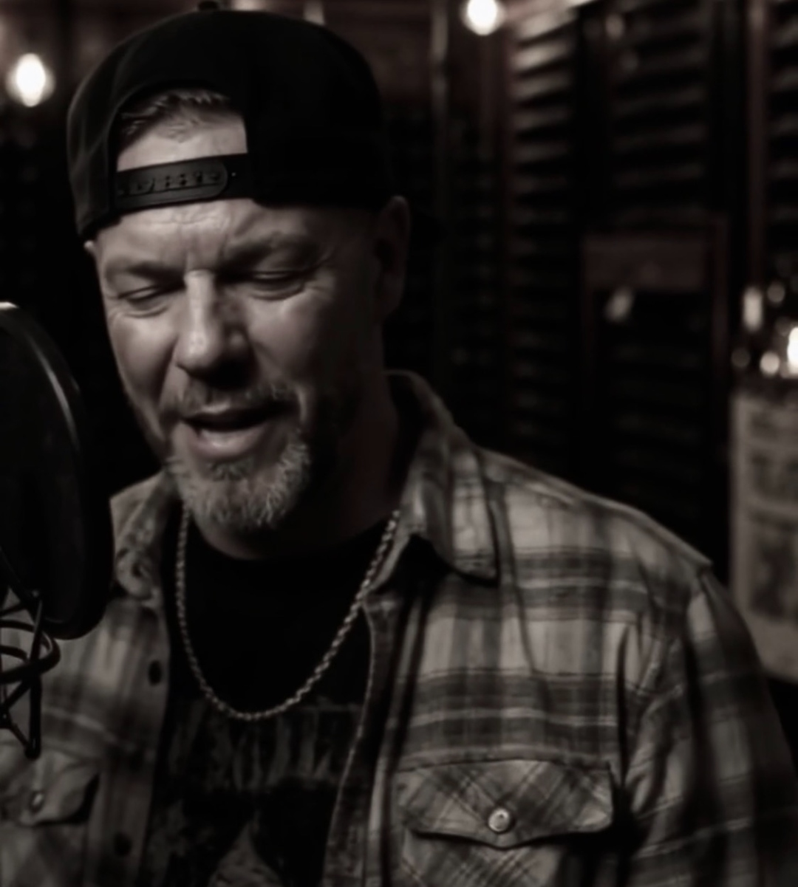
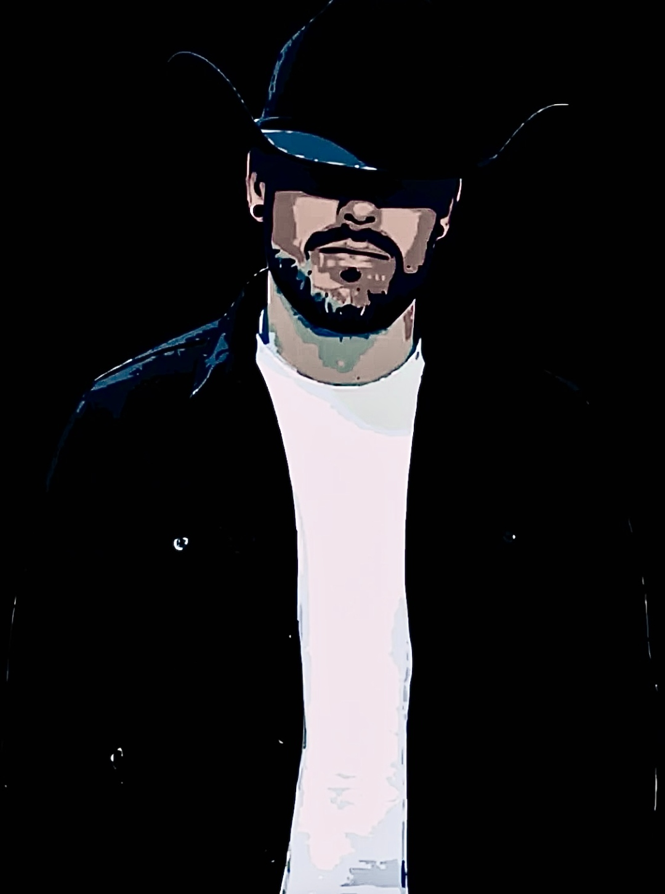

Country × Hip-Hop · Houston 072 · SWAT Nation
PATE comes out of Houston's 072, carrying the South's full weight — the country roads, the concrete, the late nights in the booth, and the lessons passed down through real people in real places. He doesn't choose between country and hip-hop because where he's from, there was never a line to begin with.
Growing up in the southeast Houston area known as SWAT Nation, PATE absorbed both worlds simultaneously — the twang of country radio bleeding into the bounce of Southern rap, the guitar alongside the 808. That duality isn't a marketing angle; it's the honest product of where he came from.
Repping SWAT Nation, PATE moves independently with a crew-first mentality. His debut album "Growing Up in the 072 – S.W.A.T. Nation" (2024) is the statement — a full-length document of his upbringing, his people, and the singular Houston pocket that shaped him. Real music for real places, real moments, real people.
PATE's sound sits at the intersection of Lil Boosie's raw Southern storytelling, the warmth of country acoustic, and the trunk-rattling production of Houston's slab culture. Every track is built from lived experience — no gimmick, no costume, just the 072 translated into sound.


Hi-res photos available on request · patemusic.live
Copy and paste the version that fits your word count. All bios are approved for print, digital, and broadcast use. For custom requests, contact Publicist@Patemusic.live.
PATE is an independent Country × Hip-Hop artist from Houston's 072, repping the SWAT Nation. His debut album "Growing Up in the 072 – S.W.A.T. Nation" (2024) fuses country acoustic with Southern rap across all major platforms.
PATE comes out of Houston's 072, carrying the South's full weight — the country roads, the concrete, the late nights in the booth, and the lessons passed down through real people in real places. Growing up in the southwest Houston area known as SWAT Nation, he absorbed both worlds simultaneously: the twang of country radio bleeding into the bounce of Southern rap, the guitar alongside the 808. That duality isn't a marketing angle — it's the honest product of where he came from. Repping SWAT Nation with a crew-first, independent mentality, PATE released his debut album "Growing Up in the 072 – S.W.A.T. Nation" in 2024 — a full-length document of his upbringing, available on Spotify, Apple Music, Amazon, and YouTube.
PATE comes out of Houston's 072, carrying the South's full weight — the country roads, the concrete, the late nights in the booth, and the lessons passed down through real people in real places. He doesn't choose between country and hip-hop because where he's from, there was never a line to begin with.
Growing up in the southwest Houston area known as SWAT Nation, PATE absorbed both worlds simultaneously — the twang of country radio bleeding into the bounce of Southern rap, the guitar alongside the 808. That duality isn't a marketing angle; it's the honest product of where he came from. His sound sits at the intersection of Lil Boosie's raw Southern storytelling, the warmth of country acoustic, and the trunk-rattling production of Houston slab culture.
Repping SWAT Nation with a crew-first, independent mentality, PATE released his debut album "Growing Up in the 072 – S.W.A.T. Nation" in 2024 — a full-length document of his upbringing, his people, and the singular Houston pocket that shaped him. Every track is built from lived experience: no gimmick, no costume, just the 072 translated into sound. Available on all major streaming platforms.

A debut statement from Houston's 072 — part country autobiography, part Southern rap declaration. Produced independently and distributed worldwide, the album documents the SWAT Nation experience with raw authenticity: acoustic guitars over rolling 808s, stories about crew, community, and coming up in one of Houston's most distinct pockets.
Available on all major streaming platforms with a full music video on YouTube.
They Doubled I Doubled — Studio Session · Subscribe on YouTube →
"PATE doesn't pick a lane — he owns the whole road. The 072 is coming through loud and clear on every track, and that's exactly what Southern music needs right now."
— Independent Review"A debut that refuses to apologize for where it comes from. Country roads, concrete blocks, and 808s — PATE makes it all one thing."
— Music Blog Feature"The SWAT Nation identity is front and center. This is Houston music with real teeth — crew-first, community-rooted, and built to last."
— Regional Music Coverage"PATE sits in a unique pocket — Lil Boosie's rawness meets country's warmth, filtered through the specific gravity of the Houston 072. That's a lane nobody else is occupying."
— Artist Profile

Hi-resolution versions available upon request. Contact for download access.
PATE's Country × Hip-Hop sound crosses both formats — targeted across Houston's top urban and country stations, plus community and independent outlets.
DJ Young Jas · DJ J-Que
Houston's premiere hip-hop station · Swishahouse Mixes · Party & mixshow segments · Heavy current rap & urban hits
Superstar · DJ Mr. Rogers · Kiotti Brown · DJ Supastar
H-Town's real hip-hop station · High-energy club & rap · Current bangers & mixshow rotation
Houston's New Country
High-energy pop-country & upbeat current tracks · Prime crossover target for PATE's country side
Lo — The Lo Show
High-energy country variety · Upbeat hits format · Genre-adjacent audience for the 072 sound
Feature Spin
Pacifica Radio · Community & independent music programming · Authentic independent artist support
Local Streaming & Campus Radio
Houston-area college stations · Independent streaming platforms · Genre-fluid mixshow DJ bookings via local networks
PATE is actively pitching to playlist editors across all major platforms via official artist channels. Upcoming releases are submitted through Spotify for Artists, DistroKid, and direct curator outreach on Apple Music and Amazon Music.
For playlist submission or curator collaboration: Publicist@Patemusic.live
Media requests, interviews, and press inquiries handled directly by the artist.
PATE is independent and open to meaningful label conversations, sync licensing, and A&R discussions.
Show bookings, feature requests, and performance inquiries.